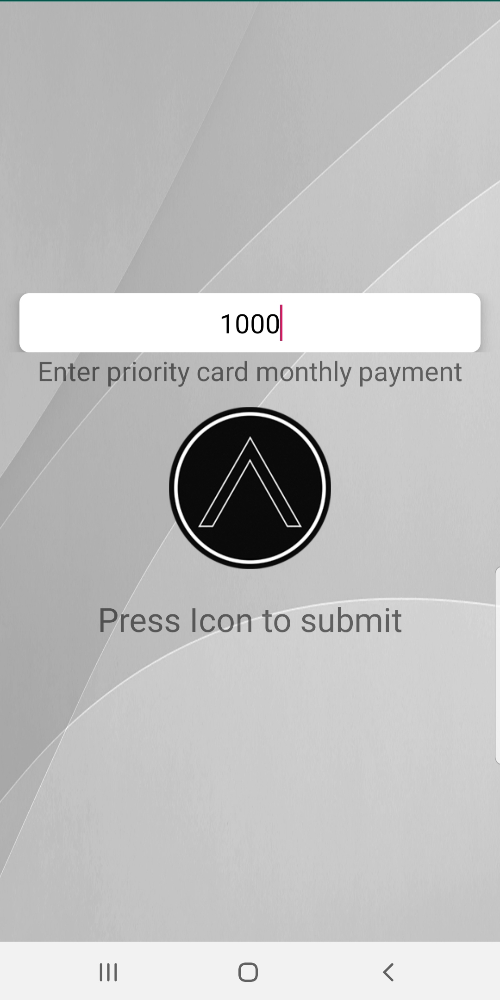

Projects
Credit Shield: Android application used to monitor payments on three credit cards to view interest accrued within a yearly timeline. The application offered three alternate timelines to view monthly payments such as min pay, batch, and priority. Min pay allowed the user to see how much interest was building monthly through graphs produced by user input of cards with a red line marking total interest gained. Batch allowed users to input a time frame in months to pay off all cards then displayed monthly payments needed in order to reach selected timeline. Priority allowed to user to input a monthly amount on a specified card while inputting minimum on other cards to focus payments. Last feature in application was recommendation tab that displayed credit card opportunities and rewards for sign up.
Home Menu
Batch Mode
Min Pay Graph
Month Range
Priority Pay

Priority Graph
Python Grading Website: During my time at Rutgers university students were tasked with a group project to create a python website that was structured with a front, middle, and back-end developer. The goal was to create a login system for a student and teacher where a student would be able to take an online python exam then view their graded exam after it had been published by the professor. The professor would be able to create exams through a pool of questions they added through the site then publish exams and grade them leaving notes for the student on where their error occurred. The site ran python code in order to determine whether answers where correct and had test cases to verify variation in answers. All information was stored in back-end database where I organized info into appropriate tables and filtered them on requested queries. During my time at Rutgers university students were tasked with a group project to create a python website that was structured with a front, middle, and back-end developer. The goal was to create a login system for a student and teacher where a student would be able to take an online python exam then view their graded exam after it had been published by the professor. The professor would be able to create exams through a pool of questions they added through the site then publish exams and grade them leaving notes for the student on where their error occurred. The site ran python code in order to determine whether answers where correct and had test cases to verify variation in answers. All information was stored in back-end database where I organized info into appropriate tables and filtered them on requested queries.
Login Page

Create an Exam

Take Exam

Grade Exam